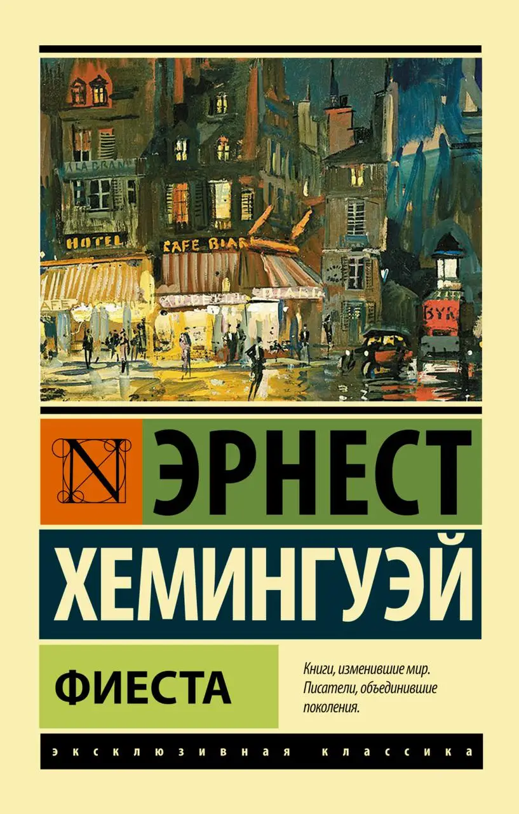

Американський письменник, поет і журналіст Говард Філіпс Лавкрафт (1890—1937) працював у жанрі хорору, містики,
фентезі та наукової фантастики й був творцем і магістром американської містичної «чорної школи» 20—30-х років минулого століття.
За життя він не опублікував жодної книжки і зажив слави серед широкого читацького загалу вже після своєї смерті.

Американський журналіст Джейк Барнс відвоював на фронтах Першої світової, де отримав важкі поранення.
Барнс щоночі проводить час з друзями в барі на бульварі Монпарнас, сподіваючись, що алкоголь допоможе йому залікувати душевні і тілесні рани, завдані Першою світовою війною.
Барнс закоханий у Брет Ешлі, яка втілює собою нову сексуальну свободу 1920-х років, має численні романи. Вона теж закохана в Барнса, однак, через отримані на війні Джейком травм, їх роман має платонічний характер.